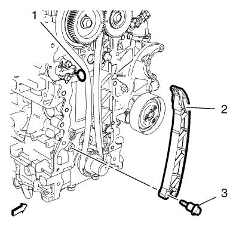
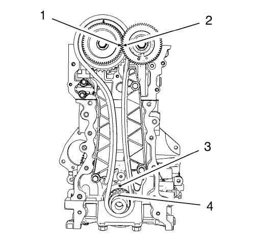

Sustitución del amortiguador de la cadena de distribución
EN-49073 Pasador - Tensor de la cadena de distribución
Si desea informarse sobre herramientas regionales equivalentes, consultar Herramientas especiales
Procedimiento de desmontaje
- Retire la cubierta delantera del motor. Consultar Sustitución de la cubierta delantera del motor .

Nota: Evite los saltos de la cadena de distribución.
- Tense el tensor de la cadena de distribución. Fije el tensor con el pasador EN-49073 (1).
- Retire el tornillo del amortiguador de la cadena de distribución (3).
- Retire el amortiguador de la cadena de distribución (2).
Procedimiento de montaje
- Aplique un producto de seguridad sobre el tornillo del amortiguador de la cadena de distribución (3).
Nota: Evite los saltos de la cadena de distribución.
- Monte el amortiguador de la cadena de distribución (2).
Precaución:Consulte Precaución con las fijaciones en la sección Prólogo.
- Monte el tornillo del amortiguador de la cadena de distribución (3) y apriételo a 25 N·m (18 lib. pie).
- Retire el dispositivo tensor EN-49073 (1).

- Gire el motor 2 revoluciones hacia la derecha.
- Coloque el cigüeñal a 90° del P.M.S. de encendido del cilindro 1 y compruebe si se dan las siguientes condiciones:
| • | La flecha del engranaje del árbol de levas de admisión (1) debe coincidir con la flecha del engranaje del árbol de levas de escape (2). |
| • | La muesca del piñón del árbol de levas (4) debe coincidir con la marca del bloque motor (3). |
- Monte la tapa delantera del motor. Consultar Sustitución de la cubierta delantera del motor .
| © Copyright Chevrolet. All rights reserved |